01 / 08
All Stats
Everything on one screen. Scroll up from the bar and every stat is there, each with the time it was last read.
Apple Watch health & fitness app
One glance at your wrist tells you whether to push or recover.
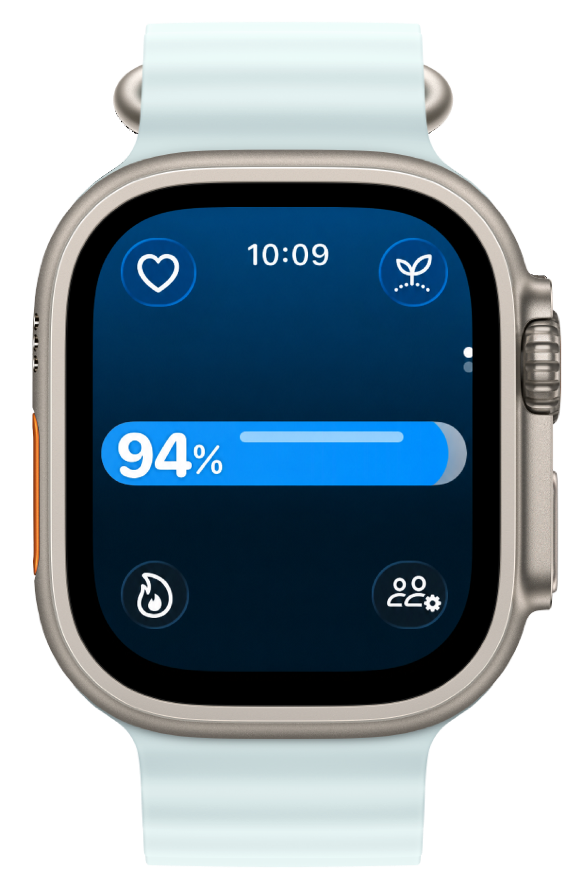
Tap to download ↗
What people are saying
It looks like a battery, but this is actually IRL Health Bar… it sums up all your health metrics into one simple bar.
A massive game changer for my Apple Watch — and I’m using it all the time.
Your health data turned into one glanceable bar — like a health bar in a game.
It’s my new favorite.
It basically turned my health into a video game.
Instead of digging through a bunch of health data, I can just glance down at my watch and see instantly where I’m at.
Most fitness apps show you more data. What most runners actually need is more clarity. Think of it like a fuel gauge for your body.
It takes confusing data nobody really understands and puts it into words that are actually simple to understand.
As y’all can hear, this app is very accessible for the visually impaired community.
6/5 stars
Incredible app! I love the HRV component and the recovery aspect! Highly recommend to anyone focusing on bettering their rest and recovery phase.
Changed the Game
This app makes running more intuitive, where I further learned how to interpret my remaining energy based on how my body feels.
Fantastic app!
An amazing app, very thoughtfully designed, very intuitive. It’s very encouraging to see my numbers go up. My favorite fitness app!!!!
Great tool for early runners, lifetime runners or just daily life!
Stamina bar has helped me easily see where my body is at while running to inform whether I need to push harder or pull back in distance running. Even in down periods from running it helps me navigate my daily health and point out when I need to slow things down to take a breath or recenter.
Every stat at or above your baseline.
Recovered enough to take on whatever's next.
Daily activity, workouts, even excitement draw it down.
Your body is asking for a lighter day.
Eight screens sit behind the number. These are all of them.
01 / 08
Everything on one screen. Scroll up from the bar and every stat is there, each with the time it was last read.
02 / 08
Not just the workout. Active and resting calories together, so the number reflects your whole day rather than the hour you trained.
03 / 08
The fastest read on effort. Resting and active heart rate, tracked through the day so you can tell a hard session from a hard week.
04 / 08
Movement you didn’t count as exercise. Walking the dog, the commute, the stairs — it all feeds the bar.
05 / 08
The best early warning you have. HRV drops before you feel run down, so a falling trend is your cue to ease off.
06 / 08
Fitness you can actually watch change. VO₂ max moves over months, not days — the long view on whether training is working.
07 / 08
Half a degree tells you a lot. Overnight shifts in wrist temperature flag illness, poor recovery and cycle changes before anything else does.
08 / 08
The signal you never notice. Breathing rate climbs when your body is working harder than you think it is.
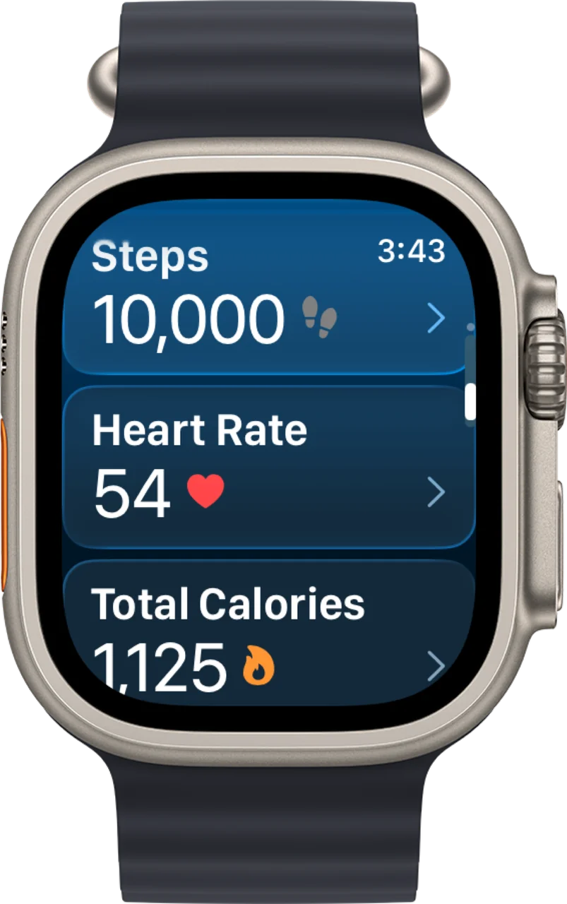
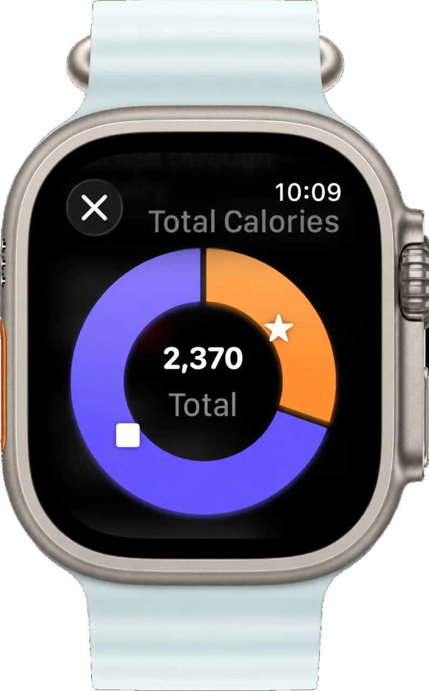
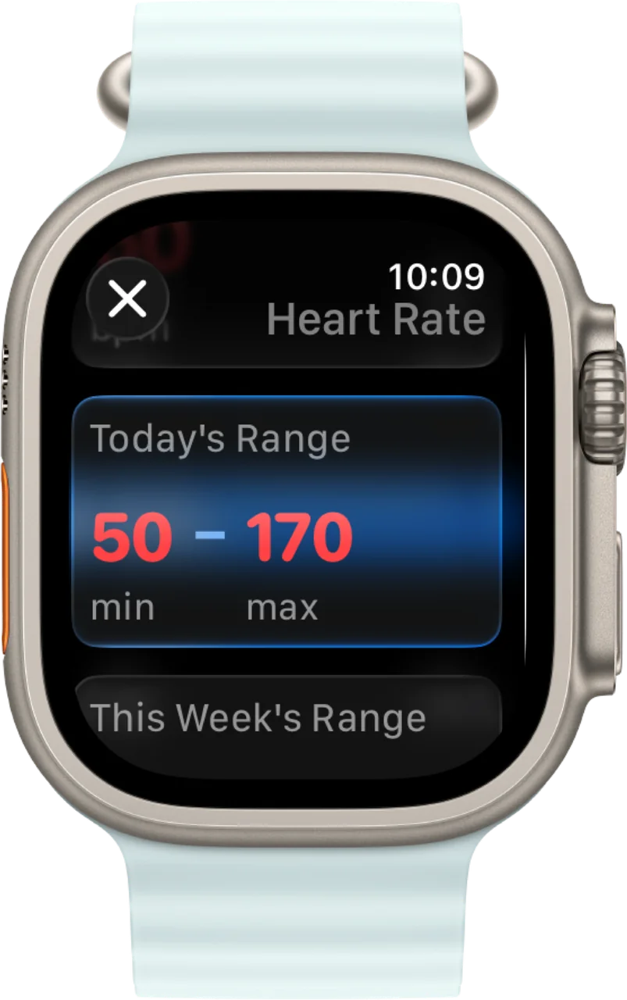
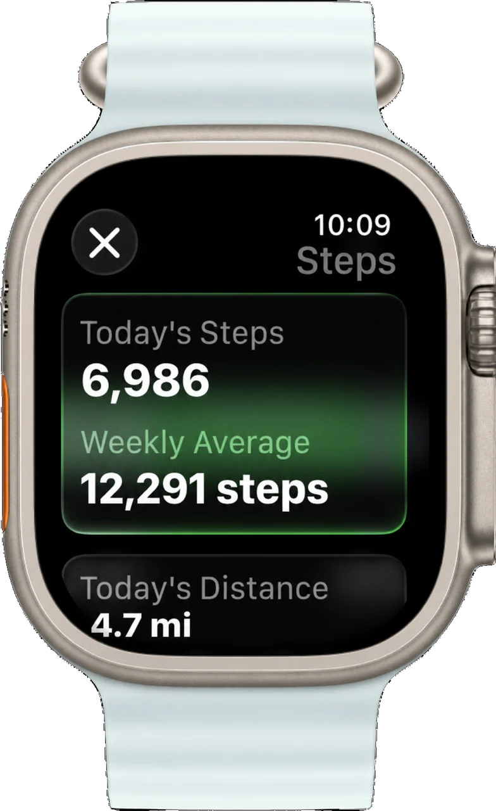
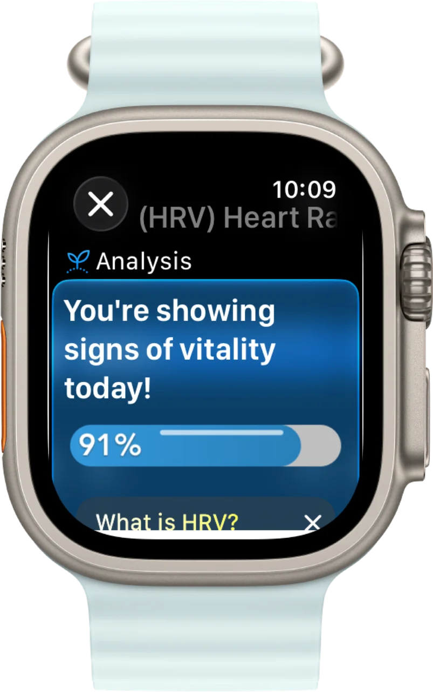
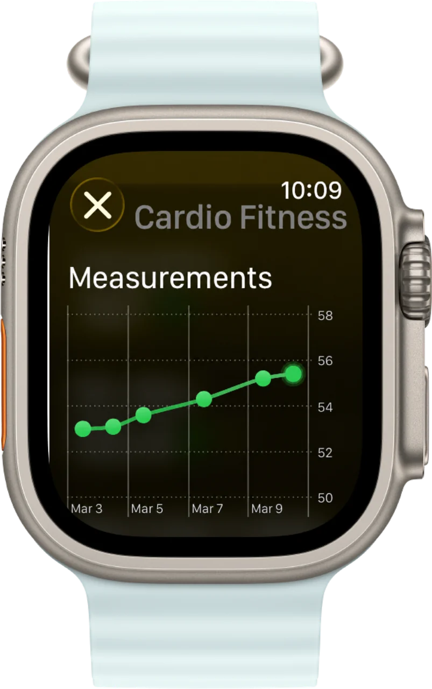
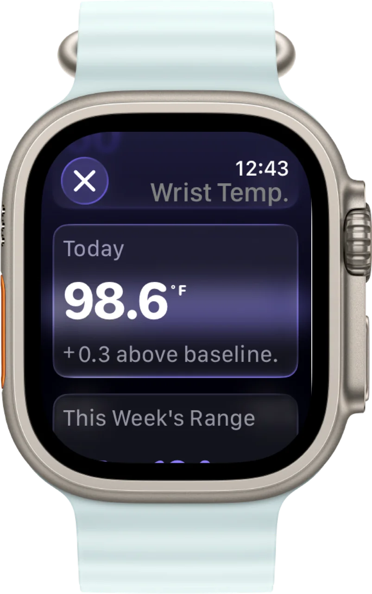
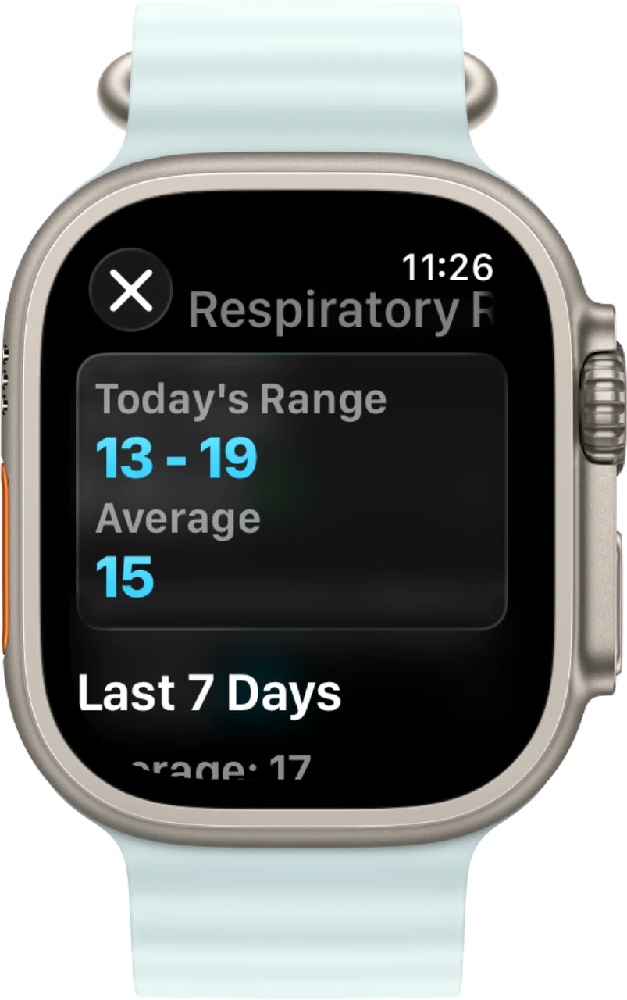
Start a workout and the bar responds in real time — feel the effort and see the cost of it at once.
01 / 03
Twenty-plus workouts. Indoor, outdoor and wheelchair activities, all supported.
02 / 03
The bar, live. Health bar, heart rate, calories and distance while you are still moving.
03 / 03
A full recap when you stop. Then send it straight to Strava.
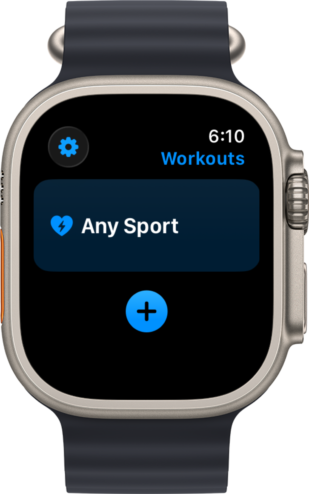
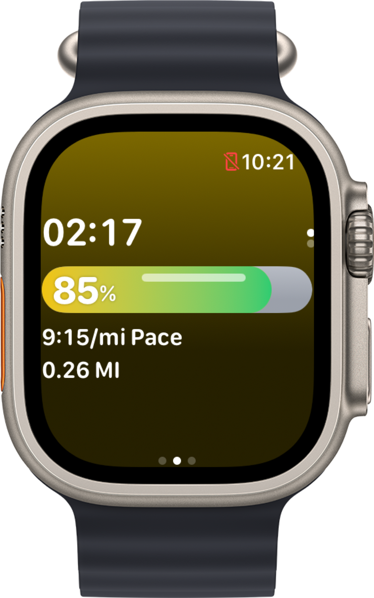
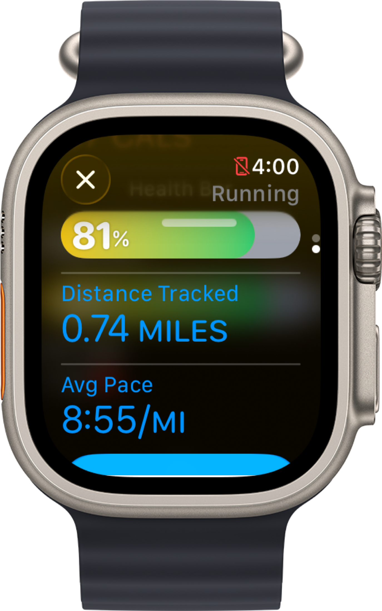
Your live bar on your stream, your TV, your desktop and your browser — a game HUD for real life.
01 / 06
An eight-character code. Find it in the app settings, then paste it wherever you want the bar.
02 / 06
A browser source in OBS. Works for Twitch, Kick, YouTube, or anything else you stream to.
03 / 06
Cast it to Roku. For the gym, the living room, or a group workout.
04 / 06
Zoom calls and the menu bar. The macOS integrations put it where you already are.
05 / 06
Pinned to the toolbar. Check the bar without opening a tab.
06 / 06
Connect once. Every workout uploads on its own — no share code needed.
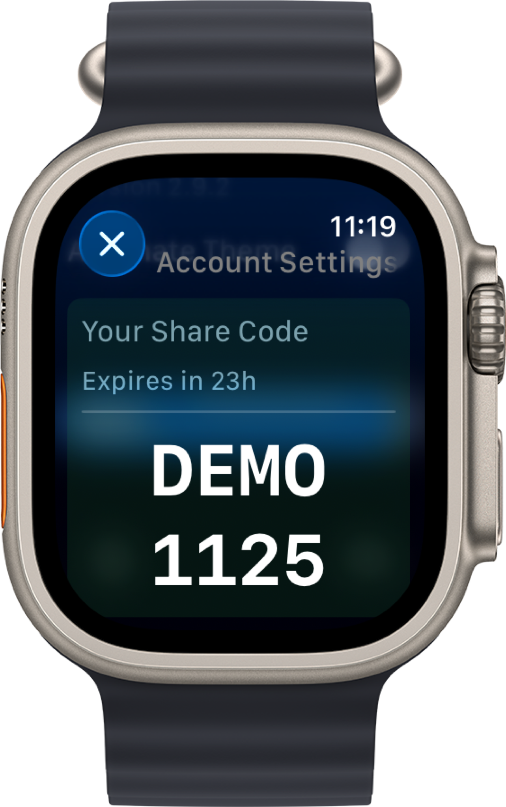